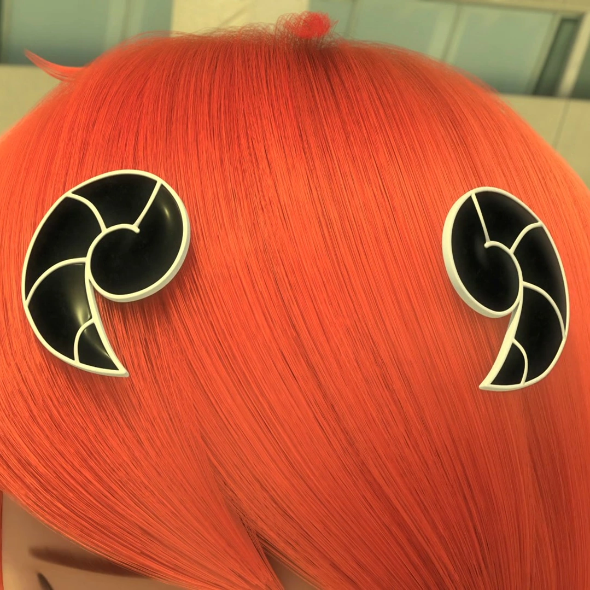

The following table shows the picture of the miraculous, the name of the kwami, the phrase that must be said to activate the miraculous, and the power that it grants.
| Picture of the Miraculous | The Kwami | Activation Phrase | The Power that the Miraculous grants |
|---|---|---|---|
| Tikki | Tikki Spots On | The Power of Creation | |
| Plagg | Plagg Claws Out | The Power of Destruction | |
| Trixx | Trixx Let's Pounce | The Power of Illusion | |
| Wayzz | Wayzz Shell On | The Power of Protection | |
| Pollen | Pollen Buzz On | The Power of Paralyzation | |
| Nooroo | Nooroo Dark Wings Rise | The Power of Transmission | |
| Duusu | Duusu Spread My Feathers | The Power of Emotion | |
| Fluff | Fluff Clockwise | The Power of Evolution | |
| Longg | Longg Bring the Storm | The Power of Perfection | |
| Sass | Sass Scales Slither | The Power of Intuition | |
|  | Ziggy | N/A | The Power of Passion |
| Kaalki | Kaalki Full Gallop | The Power of Migration | |
| Xuppu | Xuppu Show Time | The Power of Derision | |
| Barkk | Barkk on the Hunt | The Power of Adoration | |
| Orikko | Orikko Sunrise | The Power of Pretension | |
| Daizzi | Daizzi Rejoice | The Power of Jubilation | |
| Mullo | Mullo Get Squeaky | The Power of Multiplication | |
| Stompp | Stompp Make Way | The Power of Determination | |
| Roaar | Roaar Stripes On | The Power of Exaltation |